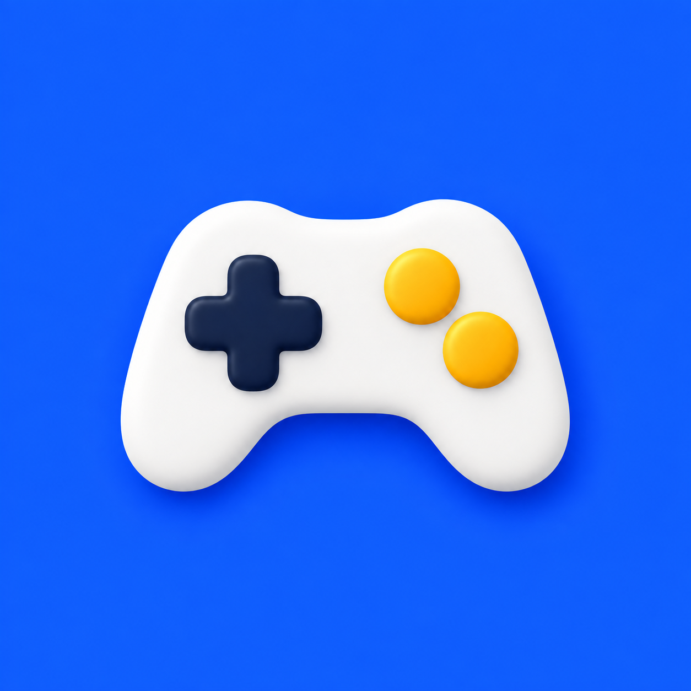
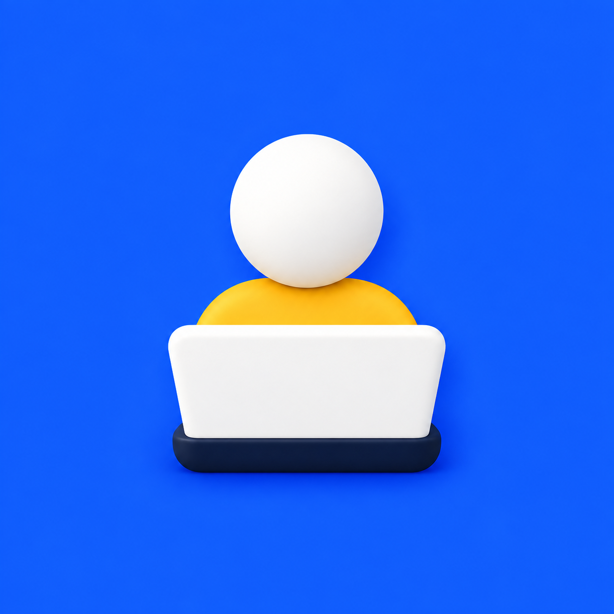
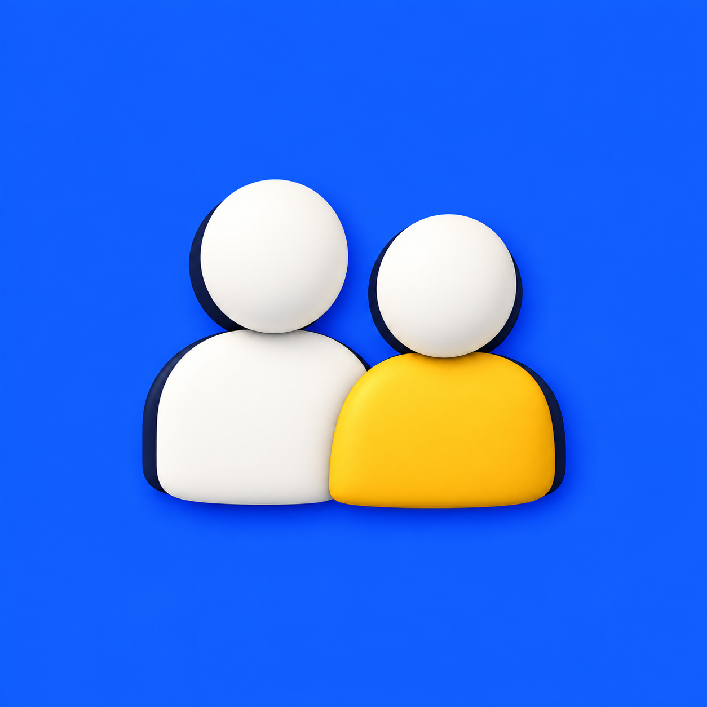

Helena e Júlio · Programação Infantil
Capas dos destaques
Seis imagens na ordem dos destaques. Ao escolher a capa no Instagram, mantenha o símbolo centralizado e preserve a margem azul. O nome fica no título do destaque.
Baixar as seis capas em PNGConferência do recorte circular · 56 px




02 · Cursos
Baixar PNG
03 · Alunos
Baixar PNG
04 · Dúvidas
Baixar PNG
05 · Avaliações
Baixar PNG
06 · Sobre nós
Baixar PNG
Estrutura de 04/10, noite: o destaque Projetos virou Cursos e usa a capa 02. O novo destaque Ferramentas, entre Cursos e Alunos, ainda precisa de capa no mesmo padrão. Os arquivos são quadrados; esta página mostra o recorte circular. Imagens geradas com a ferramenta integrada de criação de imagens em 04/10/2026. Ver os prompts utilizados · Abrir o guia de montagem dos destaques.